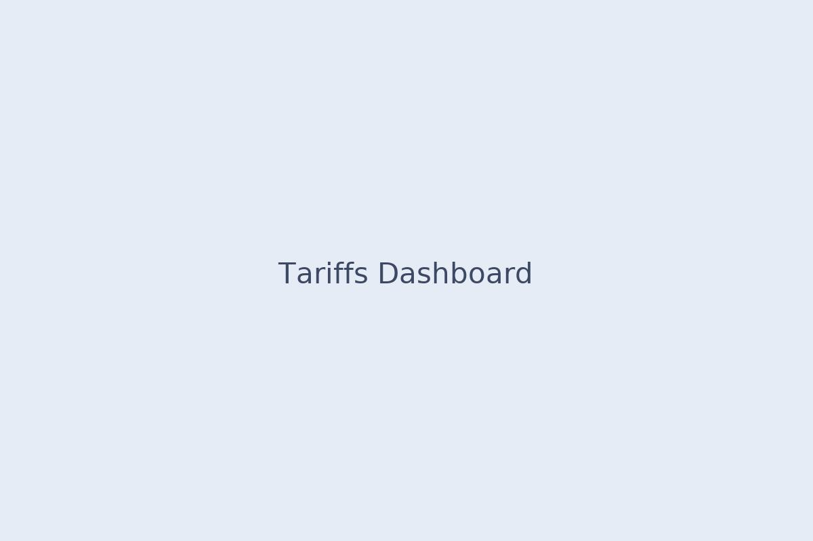

Project Title
One-sentence summary of the outcome and impact.
Context
Problem, why it matters, audience.
Approach
- Data sources, cleaning, modeling
- Stack (Power BI, Python, SQL)
- Design decisions
Results
- Key metric ↑ (e.g., +15% accuracy, time-to-insight ↓ by 40%)
- What stakeholders used it for